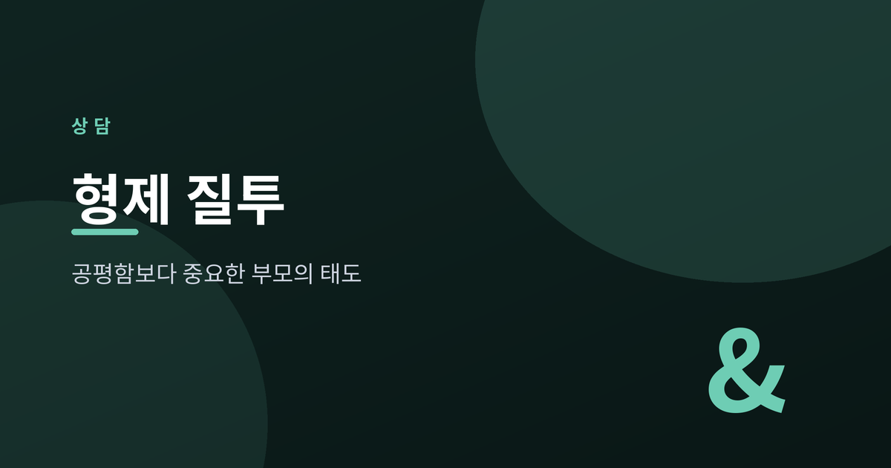
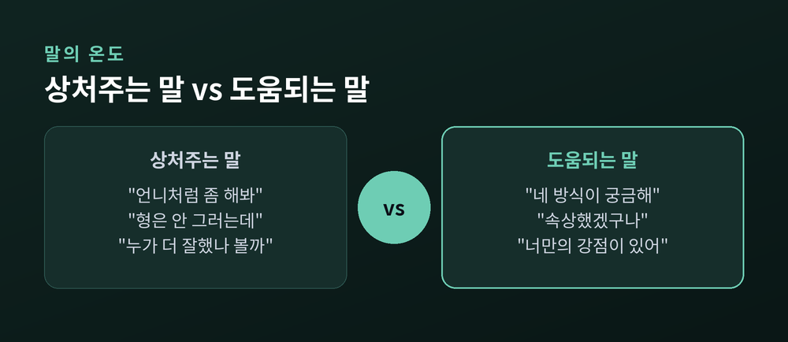
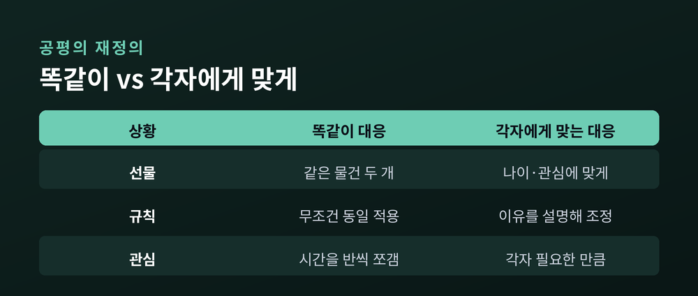
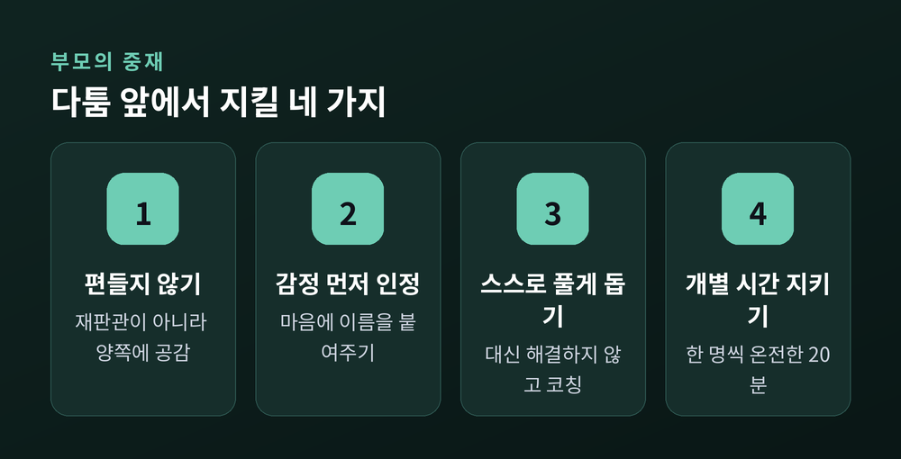

공평함보다 중요한 부모의 태도

형제자매를 키우는 집이라면 다툼과 질투는 낯선 일이 아닙니다. 오늘은 이 갈등 앞에서 부모가 어떤 태도를 취해야 하는지, 특히 '공평함'을 둘러싼 오해를 정리해 보려 합니다. 정답을 주기보다, 함께 생각해 보는 글이 되면 좋겠습니다.
형제자매의 질투와 경쟁은 자연스러운 현상입니다.
아이들은 부모의 사랑과 관심이라는 한정된 자원을 두고 경쟁하기 때문입니다. 발달심리학은 이 과정을 나쁘게만 보지 않습니다. 협상하고, 감정을 다스리고, 상대의 입장을 헤아리는 법을 배우는 계기가 되기도 합니다.
그러니 다툼 자체를 없애려 애쓸 필요는 없습니다. 중요한 것은 그 앞에서 부모가 어떻게 반응하느냐입니다. 같은 다툼이라도 부모의 태도에 따라 관계는 가까워지기도, 멀어지기도 합니다.
질투 역시 마찬가지입니다. 동생이 태어나거나 형제 중 누군가가 유독 칭찬을 받을 때, 아이가 느끼는 서운함은 이상한 감정이 아닙니다. 그 마음을 부모가 알아채고 말로 인정해 줄 때, 아이는 자신이 밀려나지 않았다는 안도감을 얻습니다. 감정을 억누르라고 다그치기보다, 먼저 그 감정에 이름을 붙여 주시길 권합니다.

많은 부모가 공평함을 '둘을 똑같이 대하는 것'이라 여깁니다. 하지만 심리학이 말하는 공평함은 다릅니다.
공평함은 각자에게 필요한 것을 채워주는 일입니다.
아이마다 나이와 기질, 발달 단계가 다릅니다. 모든 것을 똑같이 나누면 오히려 불만이 커지기도 합니다. 같은 장난감을 둘에게 안길 필요는 없습니다. 각자에게 맞는 것을 주면 됩니다.
한 아이에게만 다른 규칙이 적용될 때는 그 '이유'를 설명해 주세요. 예전엔 똑같이 주는 것이 공평이라 믿었다면, 지금은 '왜'를 나누는 것이 더 공평하다고 이해하시면 좋겠습니다. 그래야 편애가 아니라 각자를 향한 배려로 다가갑니다.
특히 비교하는 말은 조심할 필요가 있습니다. "형은 안 그러는데" 같은 말은 아이의 자존감을 깎고, 형제를 동지가 아닌 경쟁자로 만듭니다. 별생각 없이 던진 한마디가 아이의 마음에는 오래 남습니다.
비교 대신, 아이마다 지닌 고유한 결을 자주 말해 주세요. 누구는 손이 야무지고, 누구는 마음이 여립니다. 각자의 강점을 이름 붙여 인정해 주면, 아이는 형제와 견줄 필요 없이 자기 자리를 갖게 됩니다.

아이들이 다툴 때, 부모는 종종 재판관이 되려 합니다. 누가 옳고 그른지 가려주려는 것이지요.
하지만 편을 들면 '부모의 인정'을 두고 벌이는 경쟁이 더 뜨거워집니다. 양쪽의 억울함에 똑같이 귀 기울이되, 누구의 편도 들지 않는 편이 낫습니다.
대신 스스로 풀도록 돕습니다. 감정을 먼저 가라앉히고, "나는 ~해서 속상했어" 하고 자기 마음을 말로 옮기게 이끌어 주세요. 이렇게 자란 아이는 갈등을 두려워하지 않고 다루는 법을 몸에 익힙니다. 매번 부모가 대신 답을 내려주면, 아이는 스스로 조율하는 힘을 기를 기회를 잃습니다.
물론 모든 상황을 아이에게 맡길 수는 없습니다. 신체적 다툼이나 반복되는 문제, 안전을 해치는 상황에서는 분명한 개입이 필요합니다. 다만 그때에도 지시와 처벌보다, 무엇이 옳은지 함께 생각해 보는 방향이 낫습니다.
그리고 아이 한 명 한 명과 보내는 개별 시간을 잊지 마세요. 하루 이십 분이라도 온전히 집중된 시간이면 충분합니다. 거창한 이벤트가 아니어도 좋습니다. 관심을 확신하는 아이는 그 관심을 두고 싸울 이유가 줄어듭니다. 억울함을 들어주거나 훈육이 필요할 때도, 다른 형제 앞이 아니라 조용히 1:1로 이야기하시길 권합니다.

정리하면 이렇습니다.
형제 갈등에서 부모가 지켜야 할 것은 저울의 균형이 아니라, 각자를 향한 시선입니다.
"똑같이 대하는 것보다, 각자를 제대로 바라보는 것이 공평입니다."
다만 갈등이 오래 지속되거나 아이의 일상에 깊은 어려움을 남긴다면, 혼자 감당하려 애쓰지 마시고 가족상담이나 아동청소년상담 등 전문 상담을 받아보시길 권합니다.
아이가 정말 바라는 것은 형보다 앞서는 자리가 아니라, 부모의 눈 안에 온전히 담기는 순간일지도 모릅니다.